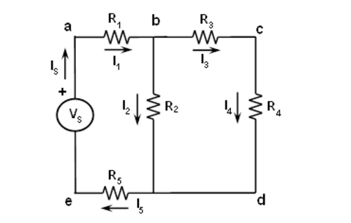
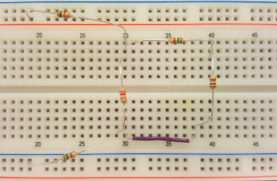

2. Kirchhoffs Spannungs- und Stromgesetze¶
2.1. Zielsetzung¶
Ziel dieses Labors ist es, Kirchhoffs Spannungsgesetz (Maschenregel) und Kirchhoffs Stromgesetz (Knotenregel) mittels Maschen- und Knotenanalyse der gegebenen Schaltung zu überprüfen.
2.2. Hintergrund¶
Kirchhoffs Spannungsgesetz besagt, dass die algebraische Summe aller Spannungen in jeden geschlossenen Kreis (Schleife oder Masche) Null ist. Wenn wir die Spannungen an jedem Widerstand R1 bis R5 als V1 bis V5 definieren (Abbildung 1), ergibt sich nach Anwendung des Kirchhoff-Spannungsgesetzes für die Maschen 1 und 2:
Abb. 2.1 Kirchhoff’s Knotenpotentialverfahren
Kirchhoffs-Stromgesetz besagt, dass die algebraische Summe aller Ströme an einem Knoten Null ist. Wenn wir die Ströme durch jeden Widerstand R1 bis R5 als I1 bis I5 definieren, ergibt die Anwendung des Kirchhoffschen Stromgesetzes auf die ersten vier Knoten in der in Abbildung 1 dargestellten Schaltung die folgenden Gleichungen;
2.3. Materialien¶
Red Pitaya STEMlab 125-14 oder STEMlab 125-10
Verschiedene Widerstände:
- 1 KΩ (2),
- 1,5 KΩ (2),
- 2.2 KΩ
2.4. Vorgehensweise¶
- Konstruieren Sie die in Abbildung 1 dargestellte Schaltung mit diesen Widerstandswerten:
- R1 = 1 KΩ
- R2 = 2,2 KΩ
- R3 = 1,5 KΩ
- R4 = 1 KΩ
- R5 = 1,5 KΩ
Verwenden Sie das color_coding_tool, um die richtigen Widerstände aus Ihrem Kit auszuwählen. Verwenden Sie Multimeter mit Widerstandsmessung, um die aktuellen Widerstandswerte zu überprüfen.
Verwenden Sie anstelle der in Abbildung 1 dargestellten Spannungsquelle „Vs“ die STEMlab-Spannungsstifte am Erweiterungsstecker E2. Verbinden Sie den 5V-Pin mit dem Knoten a und den Knoten e mit dem GND -Pin.

Abb. 2.2 Leistungsanschlüsse
Die Schaltung auf der Steckplatine ist in der folgenden Abbildung dargestellt.
Abb. 2.3 Widerstandsschaltung aus der Nähe
Messen Sie alle Spannungen genau und berechnen Sie Ströme in der Schaltung mit der Oszilloskopanwendung.
Das Messen des Spannungsabfalls am gewünschten Widerstand erfolgt, in dem man die Oszilloskopsonde von IN1 mit der einen Seite des Widerstands und die Oszilloskopsonde von IN2 mit der anderen Seite des Widerstands verbunden ist. Die Spannungsdifferenz VIN1-VIN2 liefert eine Spannung am gemessenen Widerstand.
- Stellen Sie die Dämpfung der Sonden auf x10 ein.
- Schließen Sie die Sonden an den gewünschten Widerstand an.

Abb. 2.4 Messkreis
Oszilloskop-Anwendung starten

Abb. 2.5 Oszilloskopanwendung
Im Einstellungsmenü IN1 und IN2 die Option Sondendämpfung x10 auswählen.
Im Messmenü „MEAN“ auswählen, IN1 auswählen und DONE drücken.
Im Messmenü „MEAN“ auswählen, IN2 auswählen und DONE drücken.
Nach dem Anklicken von „Fertig“ werden die Messungen des Mittelwertes von IN1 und IN2 angezeigt. Verwenden Sie diese Messung, um die Spannung an R1 zu berechnen.
VR1= MEAN( IN1 ) - MEAN( IN2 )
IR1= VR1/ R1.
Bemerkung
Um korrekte Spannungsvorzeichen zu erhalten, arbeiten Sie bei der Messung immer in die gleiche Richtung: Schließen Sie beispielsweise die IN1-Sonde auf der Seite des Widerstandes an, wo der markierte Pfeil beginnt (Abbildung 1).
Protokollieren Sie die Messungen in tabellarischer Form mit den gemessenen Spannungs- und Stromwerten wie unten gezeigt.
Abzweig Strom/Spannung V/Volt I/mA R/\(k\Omega\) \(V_1\), \(I_1\)
\(V_2\), \(I_2\)
\(V_3\), \(I_3\)
\(V_4\), \(I_4\)
\(V_5\), \(I_5\)
\(V_s\), \(I_s\)
2.5. Fragen¶
- Berechnen Sie die idealen Spannungen und Ströme für jedes Element in der Schaltung und vergleichen Sie sie mit den Messwerten.
- Berechnen Sie den prozentualen Fehler in den beiden Messungen und geben Sie eine kurze Erklärung für den Fehler.